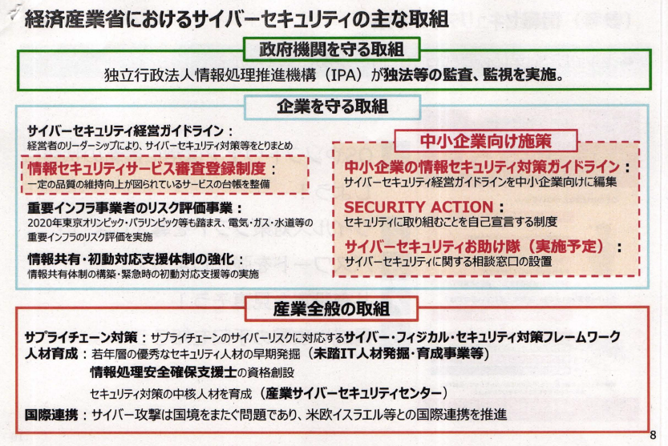

Expand
-
Collapse
Sec01-03-06【スライド】経済産業省のサイバーセキュリティ政策
出典
2018年10月16日
第4回コラボレーション・プラットフォーム資料
経済産業省商務情報政策局サイバーセキュリティ課 奥家課長
（1）中小企業が直面するサイバー攻撃
個人情報等の機密性の高い’情報を持っていなければ‘ザイバー攻撃は受けないのか？
ザイパー攻撃による事業停止のリスク
自社だけがサイバーセキュリティ対策を実施していればよいのか？
サプライチェーン経由で発生する事故
攻撃者は中小企業を狙わないのか？
(2）経済産業省のサイバーセキュリティ政策
経済産業省におけるサイバーセキュリティの主な取組

中小企業の情報セキュリティ対策ガイドライン(IPA)
(参考)情報セキュリティ5か条
セキュリティ対策自己宣言「Security Action」(IPA)
サイバーセキュリティお助け隊
情報セキュリティサービス審査登録制度(IPA)
基準を満たした情報セキュリティサービスの利用促進